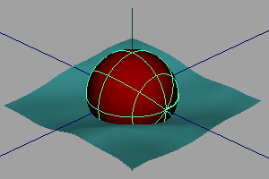

只使用一个命令，您就可以将 NURBS 球体（浮标）添加到海洋并使其在水中上下摆动。该运动限于 Y 方向。

添加动力学浮标
- 如果场景有多个海洋，选择希望浮标在其中浮动的海洋。
- 选择 >
 。
。 此时将显示“创建动力学表面定位器”(Create Dynamic Surface Locator)窗口。
默认情况下，定位器直接连接到表达式，因此可以在不断开表达式的情况下重命名定位器。
如果要以交互方式移动定位器的位置，则不能将定位器直接连接到表达式。在这种情况下，请启用“自由变换”(Free Transform)。
- 单击“创建动力学浮标”(Create Dynamic Buoy)。Maya 将创建一个 NURBS 球体并将一个动力学定位器连接到该球体。
- 在 locatorShape“属性编辑器”(Attribute Editor)的“附加属性”(Extra Attributes)区域中，修改这些选项来模拟动态效果（请参见动力学定位器）。这些将作为表达式的输入。
- 使用 Maya 窗口底部的播放控件播放动画。